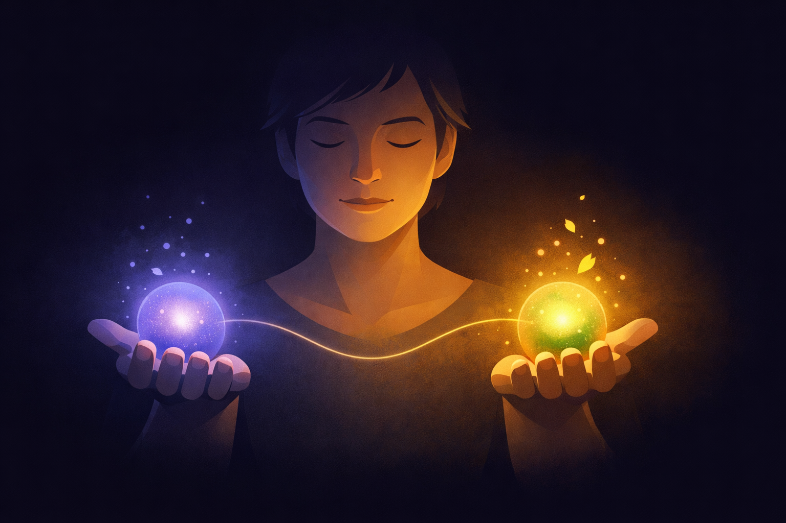

By Rustam Iuldashov
30 years lived experience with chronic migraine | Sources: 23 peer-reviewed references including The Lancet Neurology, Cephalalgia, Behavior Therapy | Last updated: March 20, 2026
Medical Review: This content is based on peer-reviewed research from The Lancet Neurology, Cephalalgia, Behavior Therapy, Sociology of Health & Illness, Frontiers in Psychology, and Bereavement Care. Rustam Iuldashov is not a medical professional. Always consult a qualified healthcare provider for health-related decisions.
📋 Key Takeaways
- Chronic migraine creates a specific, unnamed grief — mourning for futures that were never realized. Psychology calls it ambiguous loss and disenfranchised grief.
- This grief is rarely acknowledged socially, which intensifies isolation and shame, making it feel like a personal failing rather than a universal human response.
- Counterfactual thinking — the “if only” loop — perpetuates grief and depression rather than resolving it. Recognizing the pattern is the first step to breaking it.
- Narrative therapy’s externalization separates your identity from your illness: migraine is the uninvited co-author of your story, not the author.
- Re-authoring means finding the chapters grief has hidden — the moments of agency, adaptation, and depth that the dominant loss narrative obscured.
- The goal is not closure. It is learning to hold both the loss and the life that remains — at the same time, in the same hand.
You never got a funeral for the career you didn’t take.
No one sent flowers when you cancelled the trip — again. There was no eulogy for the version of yourself who could have said yes to that opportunity, that relationship, that life. No one wore black. No one stood at your door with a casserole. And yet something died. Quietly. Repeatedly. Over years.
People with chronic migraine know this feeling the way they know light sensitivity — not as a single event, but as a permanent condition of living. It arrives as a slow accumulation of missing pieces. The promotions you couldn’t chase. The friendships that faded because you cancelled one time too many. The spontaneity that quietly packed its bags and left without a note.
The Global Burden of Disease 2023 study found that headache disorders affect nearly 3 billion people worldwide, with migraine alone accounting for roughly 90% of all headache-related disability.[1] But disability statistics measure what can be counted. They cannot quantify the distance between the life you imagined and the one you’re living.
That distance has a name. Several names, actually. And understanding them may be the first step toward healing something most people don’t even realize they’re carrying.
The Loss That Has No Casket
Family therapist Pauline Boss spent nearly fifty years studying a particular kind of suffering — one that existing grief frameworks couldn’t explain. In 1999, she gave it language: ambiguous loss. Unlike clear-cut loss — a death, a final goodbye — ambiguous loss refuses resolution. The person or thing you’ve lost isn’t entirely gone. It flickers at the edges. Still possible. Still almost. Boss found that people experiencing ambiguous loss oscillate between hope and hopelessness, unable to fully grieve because there is nothing definitive to grieve.[2]
Chronic migraine is ambiguous loss made flesh.
Your brain hasn’t failed entirely — it just fails unpredictably. The future you imagined isn’t dead — it’s perpetually postponed. You might still take that trip. You might still finish that project. Maybe next month. Maybe never. The uncertainty itself becomes a form of captivity. Boss called it “frozen grief” — a state where your natural mourning process locks up because you can’t confirm what you’ve actually lost.[3]
You’re not grieving a death. You’re grieving a probability that keeps shifting beneath your feet.
And here’s what compounds the wound: nobody around you sees it as grief at all.
Why Nobody Brings You Casseroles
Grief researcher Kenneth Doka identified the phenomenon in 1989 and named it with clinical precision: disenfranchised grief — grief that is not openly acknowledged, socially validated, or publicly supported.[4] When your loss doesn’t fit society’s script for “real” loss, your pain becomes invisible. No bereavement leave. No sympathy cards. No permission.
People with chronic migraine experience disenfranchised grief in layers. First, migraine itself carries deep stigma. The CaMEO-International study surveyed over 14,000 people with migraine across six countries and found that more than 35% reported moderate to severe anxiety and depression symptoms — driven partly by the chasm between actual suffering and social recognition.[5] A separate study of 2,458 employees found that more than 40% of people who know someone with migraine believe those with the condition use it as an excuse to avoid responsibilities.[6]
Now stack the grief of lost futures on top of that stigma. Tell someone you’re mourning a career you couldn’t have, and the response arrives wrapped in good intentions: “But you’re still here. You should be grateful.”
The message, intended as comfort, functions as erasure.
The invisible burden: Doka’s framework reveals why this grief cuts so deep. When the loss itself is unacknowledged — when there is no socially recognized “thing” you’ve lost — the grief has nowhere to go.[4] It turns inward. It becomes shame. Self-blame. A dull, persistent ache you learn to carry in silence, mistaking it for personality.
The Crumbling Self-Image
Sociologist Kathy Charmaz documented something in 1983 that millions of chronically ill people recognized immediately: the “loss of self.” She described how chronically ill individuals watch their former self-images crumble without the simultaneous development of equally valued new ones.[7] Four sources of suffering drove this erosion: restricted lives, social isolation, being discredited by others, and feeling like a burden.
For those with chronic migraine, the erosion is uniquely cruel — because migraine is episodic. On good days, you catch glimpses of your old self. Productive. Social. Ambitious. The person your friends remember. Then the next attack comes, and those glimpses dissolve like morning fog. You inhabit two timelines at once: the one where you are capable, and the one where migraine controls the schedule.
Research confirms this extends beyond attack days. The CaMEO-I study found that 40% of those with migraine experience symptoms even between attacks — photophobia, cognitive fog, fatigue — what researchers call the “interictal burden.”[6] Your disability isn’t only present during the storm. It shapes the sky even when the sun is shining.
The “If Only” Trap
Grief research has identified a specific cognitive pattern that keeps people locked in mourning: counterfactual thinking. The mind’s compulsion to imagine alternative scenarios. The relentless “if only.” If only I hadn’t had migraines, I would have finished that degree. If only my brain worked differently, I’d be further along. If only, if only, if only.[8]
A longitudinal study by Eisma and colleagues followed bereaved individuals and found that self-referent upward counterfactuals — thoughts focused on what you personally could have done differently — were uniquely associated with prolonged grief and depression at both 6- and 12-month follow-ups.[9] Though the study examined bereavement after death, the cognitive machinery is identical in chronic illness grief. You replay alternative versions of your life, measuring the distance between who you are and who you believe you should have been.
Neuroscientist Mary-Frances O’Connor describes this loop as the brain generating virtual reality scenarios that temporarily reverse the loss — only to create fresh grief each time reality resurfaces.[10] The counterfactual doesn’t heal. It feeds.
For chronic migraine, this trap has a particular cruelty. The alternative life isn’t even speculative. You know exactly who you are on good days. You’ve tasted that other version of yourself. Proximity makes the gap unbearable.

The Uninvited Co-Author
Here is where narrative therapy offers something no other framework quite provides.
Think of your life as a book you’ve been writing since childhood. Migraine walked in uninvited somewhere around chapter three and started editing — crossing out paragraphs, rewriting endings, inserting plot twists you never planned. Over time, you stopped noticing. You began to believe the edits were yours. That the smaller, quieter story was the only one you were capable of telling.
Michael White and David Epston, who developed narrative therapy in the late 1980s, built their entire approach around one disruptive insight: the person is not the problem — the problem is the problem.[11] They called the core technique externalization — the act of taking the problem out of your identity and placing it where it belongs: outside of you. Not as denial, but as clarity. The migraine is not who you are. It is something that happened to your story.[12]
Externalization is the moment you look up from the page and realize: that’s not your handwriting.
In the conventional narrative of chronic illness, migraine merges with identity. You become a “migraineur.” Your condition defines your limits, your social role, your self-concept. White called this a “problem-saturated narrative” — a story so dominated by a single theme that all other storylines collapse under its weight.[12]
Externalization breaks the merger. Instead of “I am defined by migraine,” it teaches a different sentence: “Migraine has tried to write my story. What chapters has it claimed? And what chapters does it have no right to?”
This is not positive thinking. Not the toxic brightness of “everything happens for a reason.” It is the deliberate act of reclaiming authorship from a condition that has been editing your life without permission. White’s clinical work demonstrated that when people externalize a problem, they regain something essential: agency — the capacity to respond to the problem rather than be consumed by it.[12]
For the grief of unlived futures, this reframing changes the question entirely. Instead of carrying the weight of “I am someone who lost their potential,” you can ask: “Migraine has tried to narrow the territory of my life. Where has it succeeded — and where has it failed?”
Writing the Story That Actually Happened
The second move in narrative therapy is re-authoring — the process of identifying what White called “unique outcomes”, those moments when you acted outside the dominant problem story.[13] Moments the grief hid from you. Scenes the uninvited co-author tried to delete — but couldn’t.
A 2019 study in Frontiers in Psychology confirmed that narrative identity reconstruction — actively re-authoring one’s life story — functions as a core mechanism of recovery, enabling people to shift from stagnant illness narratives to richer, more complex ones.[14] Research on expressive writing found that people with chronic illness who wrote about their experience showed meaningful improvements in distress, mood, and identity coherence.[15]
Re-authoring means becoming an investigator of your own life. Every time you showed up despite the pain — that’s data. Every adaptation that required creative intelligence — evidence. Every relationship that deepened because you were forced to be honest about your limits — that is the story.
These aren’t consolation prizes. They are the actual plot — the one you were too busy grieving to read.
Re-Membering What Matters
White developed one more practice that speaks directly to this grief: “re-membering conversations” — a deliberate process of choosing who and what gets membership in your life’s story.[16]
When migraine takes away specific futures, it threatens something deeper: your connection to the values that animated those futures. You wanted that career because you valued creativity. You wanted that trip because you valued exploration. You wanted that relationship because you valued connection.
Those values didn’t die with the specific plan.
The Re-Membering Question
Who shaped those values in you? Are those people still “members” of your story? Can the values themselves — not the particular expressions of them that migraine stole — find new form?
This is not about replacing what was lost. It is about recognizing that what mattered most underneath the plans remains available, waiting for you to notice.
⚠️ When to Seek Professional Help
If you are experiencing persistent feelings of hopelessness, loss of interest in all activities, or thoughts of self-harm, these may signal something beyond normal grief. Grief related to chronic illness can sometimes develop into clinical depression or prolonged grief disorder — conditions that benefit from professional treatment.
If your grief feels immovable or significantly interferes with daily functioning for more than several months, please consult a mental health professional or call your local emergency number. Do not use this article to self-diagnose.

From Grieving to Gathering
I’ve lived with migraine for 30 years. I know the weight of those phantom lives — the one where I never cancelled, never hesitated, never had to calculate whether today’s yes would cost me tomorrow. I’ve mourned versions of myself I’ll never meet.
But I’ve also learned something that Pauline Boss articulated with more clarity than I ever could: closure is a myth.[3] The goal is not to resolve ambiguous loss. The goal is to learn to hold two truths in the same hand.
Boss calls this “both/and” thinking. It is the antithesis of the “if only” loop:
Both/And
Both I have lost futures to migraine, AND I have built a life that migraine did not author.
Both this condition has narrowed my path, AND I have found breadth in places I never thought to look.
Both something was taken, AND something remains.
This isn’t a happy ending. It’s something more durable than that.
It’s an honest one.
⚕️ Important Medical Disclaimer
This article is for informational and educational purposes only and does not constitute medical advice, diagnosis, or treatment. The author, Rustam Iuldashov, is not a licensed physician, neurologist, psychologist, or healthcare professional. He is a patient advocate with 30 years of personal experience living with chronic migraine.
All clinical claims in this article are sourced from peer-reviewed research published in indexed medical journals. Study designs and sample sizes are noted where applicable.
Always consult a qualified healthcare provider for questions about your individual health, migraine treatment, or mental health decisions. If you are experiencing persistent grief, depression, or emotional distress related to chronic illness, a therapist trained in narrative therapy or grief counseling can provide personalized support beyond what any article can offer.
Narrative therapy concepts discussed in this article are presented for educational purposes; the author does not provide therapeutic services. This content was last reviewed for accuracy on March 20, 2026.
References
- GBD 2023 Headache Collaborators. “Global, regional, and national burden of migraine and tension-type headache, 1990–2023: a systematic analysis for the Global Burden of Disease Study 2023.” The Lancet Neurology (2025). doi:10.1016/S1474-4422(25)00036-X. Systematic analysis. n=3 billion affected globally.
- Boss P. Ambiguous Loss: Learning to Live with Unresolved Grief. Harvard University Press (1999). Book / Clinical framework.
- Boss P. The Myth of Closure: Ambiguous Loss in a Time of Pandemic. W.W. Norton (2022). Book / Clinical framework.
- Doka KJ. “Disenfranchised grief.” Bereavement Care, 18(3):37-39 (1999). doi:10.1080/02682629908657467. Conceptual framework.
- Katsarava Z, Buse DC, Leroux E, et al. “Disability in migraine: Multicountry results from the Chronic Migraine Epidemiology and Outcomes – International (CaMEO-I) Study.” Cephalalgia (2024). doi:10.1177/03331024241274343. Cross-sectional survey. n=14,492.
- Shimizu T, Sakai F, et al. “Disability, quality of life, productivity impairment and employer costs of migraine in the workplace.” J Headache Pain, 22:29 (2021). doi:10.1186/s10194-021-01243-5. Cross-sectional study. n=2,458.
- Charmaz K. “Loss of self: a fundamental form of suffering in the chronically ill.” Sociology of Health & Illness, 5(2):168-195 (1983). doi:10.1111/1467-9566.ep10491512. Qualitative study / Grounded theory.
- O’Connor MF. “Grief: A Brief History of Research on How Body, Mind, and Brain Adapt.” Psychosomatic Medicine, 81(8):731-738 (2019). doi:10.1097/PSY.0000000000000717. Narrative review.
- Eisma MC, Lenferink LIM, et al. “Upward and Downward Counterfactual Thought After Loss: A Multiwave Controlled Longitudinal Study.” Behavior Therapy, 52(3):577-593 (2021). doi:10.1016/j.beth.2020.07.007. Longitudinal survey. n=65 bereaved + 59 matched controls.
- O’Connor MF. “Grieving as a Form of Learning: Insights from Neuroscience Applied to Grief and Loss.” Current Opinion in Supportive and Palliative Care, 16(1):54-60 (2022). doi:10.1097/SPC.0000000000000583. Narrative review.
- White M, Epston D. Narrative Means to Therapeutic Ends. W.W. Norton (1990). Book / Clinical framework.
- White M. Maps of Narrative Practice. W.W. Norton (2007). Book / Clinical framework.
- Hedtke L. “Creating Stories of Hope: A Narrative Approach to Illness, Death and Grief.” International Journal of Narrative Therapy and Community Work, 2014(1):1-12. Clinical paper.
- Kerr DJR, Deane FP, Crowe TP. “Narrative Identity Reconstruction as Adaptive Growth During Mental Health Recovery: A Narrative Coaching Boardgame Approach.” Frontiers in Psychology, 10:994 (2019). doi:10.3389/fpsyg.2019.00994. Conceptual framework.
- Bertrand J. “These roots that bind us: using writing to process grief and reconstruct the self in chronic illness.” British Journal of Guidance & Counselling, 49(6):766-779 (2021). doi:10.1080/03069885.2021.1933382. Autoethnographic study.
- White M. Re-Authoring Lives: Interviews and Essays. Dulwich Centre Publications (1995). Book / Clinical framework.
- Steiner TJ, Terwindt GM, et al. “Migraine-attributed burden, impact and disability, and migraine-impacted quality of life: Expert consensus on definitions from a Delphi process.” Cephalalgia, 42(13):1387-1396 (2022). doi:10.1177/03331024221110102. Delphi consensus study. n=27 experts.
- Prieto Peres MF, Sacco S, et al. “Migraine is the most disabling neurological disease among children and adolescents.” Cephalalgia, 44(8) (2024). doi:10.1177/03331024241267309. Editorial / GBD analysis.
- Blinderman CD. “Considering narrative therapy in palliative care practice.” Annals of Palliative Medicine, 12(6):1475-1479 (2023). doi:10.21037/apm-23-77. Clinical commentary.
- Bellet BW, LeBlanc NJ, et al. “Identity Confusion in Complicated Grief: A Closer Look.” Journal of Abnormal Psychology, 129(4):397-407 (2020). doi:10.1037/abn0000520. Cross-sectional study. n=150.
- Thomsen DK, Cowan HR, McAdams DP. “Mental illness and personal recovery: A narrative identity framework.” Clinical Psychology Review, 105:102444 (2025). doi:10.1016/j.cpr.2025.102444. Narrative review / Metamorphic model.
- Neimeyer RA, Torres C, Smith DC. “‘If only…’: Counterfactual thinking in bereavement.” Death Studies (2019). doi:10.1080/07481187.2019.1686090. Clinical case studies.
- Peri T, Elinger G. “Narrative reconstruction therapy for prolonged grief disorder—a pilot study.” European Journal of Psychotraumatology, 12(1):1896126 (2021). doi:10.1080/20008198.2021.1896126. Pilot study. n=10.

How We Create Content
- Peer-reviewed sources only. This article draws from The Lancet Neurology, Cephalalgia, Behavior Therapy, Sociology of Health & Illness, Psychosomatic Medicine, Frontiers in Psychology, Bereavement Care, British Journal of Guidance & Counselling, European Journal of Psychotraumatology, and Clinical Psychology Review.
- Study transparency. Study design and sample sizes noted for all clinical references.
- Source verification. All claims backed by numbered references with DOI links.
- Experience + Science. 30 years personal migraine experience combined with peer-reviewed evidence and established therapeutic frameworks (Michael White, David Epston, Pauline Boss, Kenneth Doka, Kathy Charmaz).
- Regular updates. Articles reviewed when significant new research emerges.
- No conflicts of interest. No funding from pharmaceutical companies, therapy practices, or supplement manufacturers.
Your Story Isn’t Over. Mi Knows.
Migraine Companion was built on narrative therapy principles — the idea that you are not your condition. Track, understand, and re-author your relationship with migraine.
Last reviewed: March 2026
Next scheduled review: September 2026